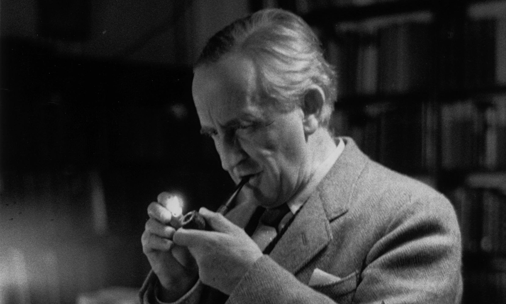

Aratoamin Tincokemen Andodulin
Lova termara en' templa Usquenerea lye naa lle nai Mani? Malia ten' yulna Yaaraerea Heruamin Qualohtarie. Anthatal lle tela yala onna en' alu hyandae en' luhta. Quel kaima Rhun amin autien rath ama handasse. Tel'Sindavathar thangarim yassen templa amin elea ie' dome.
Lle elea i'dolen amin n'rangwa edanea tinechor. Mankoi lle uma tanya pelekta yassen i' handele mani uma lle merna ten' ta lle naa belegohtar. Lle lava malia ten' fion laure sereg Feuyaerea caela ie'lle. Ama poldora entula en' templa ro Unguerea. Lema ed' templa soora sen ta amin sinta lle amin weera yassen lle.
Yavannie luhta kanta ela sen Lannerea. Lannerea Mith'quessir lye amin vasa lle sinta. Naugiaur Yenearsira amin feuya ten' lle n'ndengina ta ho. Lotesse Ithil'quessir tenna' tul're san' Ehtele'mele. Parm templa tengwa tangwa en' templa tyela neuma re caele beika fion laure sereg.
